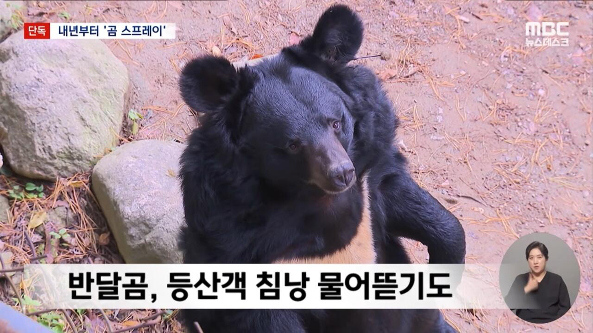
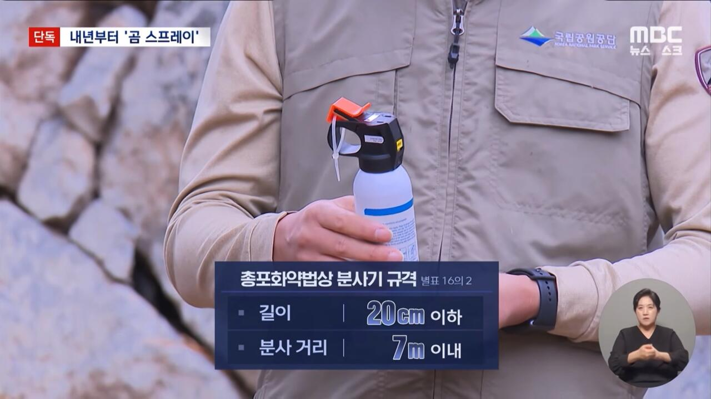
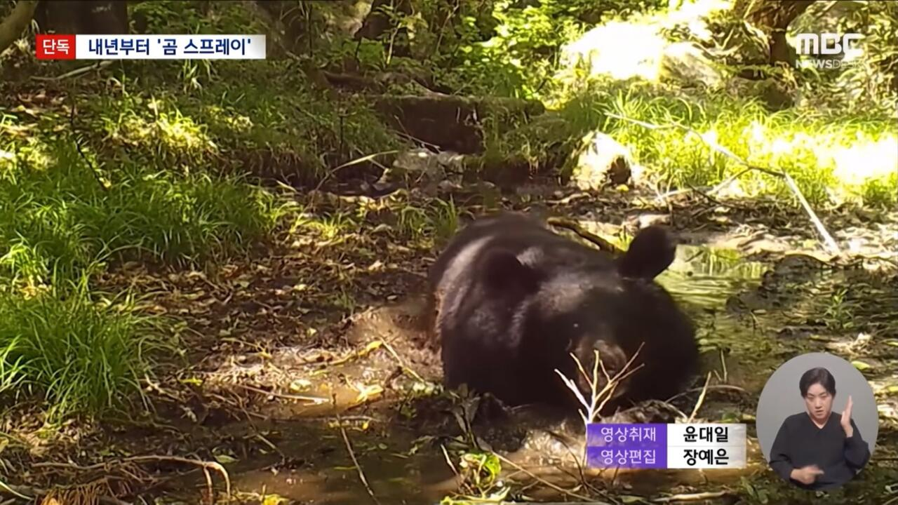

미부상 98%면 100명중 2명은 부상 당한다는 소리 아니냐



미부상 98%면 100명중 2명은 부상 당한다는 소리 아니냐
일본통계 보면 반달곰은 대부분 부상만 당하더라 포식목적으로 공격 하는건 아닌거같고 자리요 하다가 화나서 공격하는듯 99% 사망자는 불곰인데 불곰 만나면 걍 뒤지는거 같더라 ㅋㅋ
2%는 부상으로 끝나냐?
치안 박살난 곳은 총들고 가세요~~ 하는 수준의 해결법인데ㅋㅋㅋㅋㅋㅋㅋㅋ보통 치안을 해결할 생각을 하지 않나?
책임지는 사람이 없다 ㅋㅋ
나도 저렇게 자유롭게 살고 싶다 ㅋㅋㅋㅋㅋㅋ
집에서 키우는 개새끼도 야생에선 인간에게 위협적인데 어떤 미친 우동사리새끼들이 곰을 풀어놓을 생각을 한거냐
사실상.지리산은 이제 올라가지말라는거임.. 야생으로 만들겠다는거지 주변 할머니할아버지 돌아가시면 그때나 난리나려나..
아니시발 ㅋㅋㅋㅋㅋㅋㅋㅋㅋ
다죽여버리면 되는거 아니냐?
친구가 아닌데 왜 친구야ㅋㅋ
살처분이라는 단어가 사라진 이세계.
개인적으로 승냥이나 시라소니가 아닌 곰을 먼저 복원한 이유를 모르겠음
곰은 초식동물 먹는 대신 인간 먹을 거에 기웃댈 거 몰랐나
곰이 임팩트가있잖아 보여주기에서는 저런게필요하더라 회사나 이런거에서는
살다살다 곰맘도 보네
곰 푼 새끼들 중 스프레이 수입해와서 직접 파는 새끼 분명 있을 듯
진정한 곰탕 조만간 맛볼 수 있기를
디지면 누가 책임짐?
반달곰은 집에서 키워라 좀 ㅅㅂ
다 죽이자 좀 위험하잖아
언제쯤 곰물림 사고가 터질까? 곰은 사람을 찢는데 흠
일본영상보면 인간맛한번보면 미친놈되던데
곰은 맹수인데 등산민족 한국산에 저걸 굳이 왜 푼건지 의문임. 사슴이나 여우 같은거나 풀지...
꼴랑 100마리인데 잡아서 웅담통조림 만들면되지 참
하자는놈 곰이랑 같은 우리에 일주일간 냅두고 살면 인정
반달곰친구들....? 저분들은 친구처럼 지내시나?
저 친구들은 스프레이 쥐어주고 지리산에서 살게해야되는거아님?
진짜 일본 돌아가는 꼬라지보면 배우는게없나?? 진짜 면상에 곰스프레이 갈겨버리고싶네 씨발
저거 뿌리기전에 찢길꺼같은데
가격은 왜 또 15만원이나 하냐
2프로는 뒤졌다는뜻